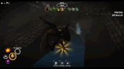
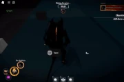
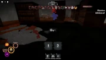
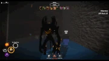
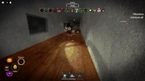

Inkfell initially teased May 6th, 2024, and officially added October 29th, 2024, is the fifteenth monster in Pillar Chase 2. He is an original form of the Ink Demon (also known as Bendy) from the horror game Bendy and the Ink Machine and its sequel, Bendy and the Dark Revival. He was originally intended to be the original Ink Demon (particularly, his appearance in the second game), but was later given an original design to avoid any potential copyright issues with the development team, Joey Drew Studios Inc. He can be unlocked for 1500 Coins in the shop.
| 

 When pressing 1 Inkfell will throw up a massive puddle of ink onto the ground that swirls around. Players who walk through this puddle will be giving the Inked status effect and highlighted for Inkfell. In addition to this, Inkfell can hold E on these portals to traverse through them. Exiting a portal has Inkfell pop out and screech, exploding the portal he teleported out from. This explosion deals 35 damage and applies the Inked effect. Inkfell will also be boosted by TBA speed when he exits a portal. Max of 6 portals, with a 6 second cooldown on both placing and teleporting through the portals. |
 When pressing 2 Inkfell will slam his hands on the ground and cause a inky explosion around himself. This slows down players, applies the Inked debuff, and deals 35 damage. If Inkfell does this ability near any portal(s), or if a player is near one, the portal(s) will explode, applying the same effects. This does not delete the portal if you use Devils Rage on it. 15 second cooldown |
 When pressing 3 Inkfell crouches down and leaps forward, gliding a large distance in the direction you are facing before pulling his wings forward to stop himself. Applies Inked debuff to players on contact. 12 second cooldown. |